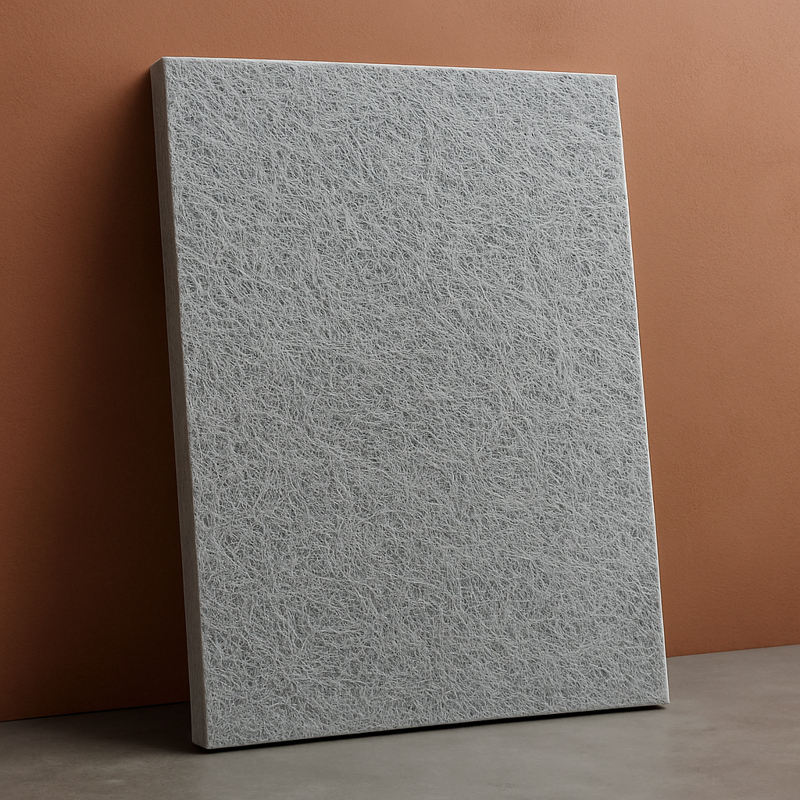

Acoustic Glass Fibre Sheets :-
In the realm of interior design and sound management, Fabric Panels, particularly Fabric Acoustic Panels, emerge as a revolutionary fusion of style and practicality. These panels, essential for enhancing both visual appeal and acoustic performance, have become pivotal in crafting tranquil and aesthetically pleasing environments. Fabric Panels for Walls go beyond mere color and texture additions; they provide a functional solution for spaces seeking a harmonious blend of elegance and utility.

Acoustic Sheets & Rafts :-
Suspended from ceilings, acoustic rafts absorb sound in large, open areas. Perfect for auditoriums, open-plan offices, and lobbies.